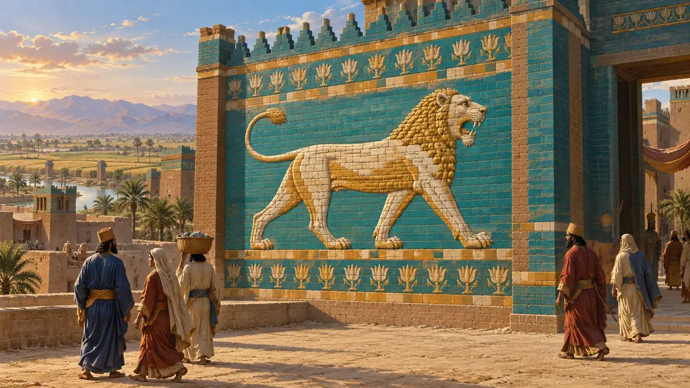
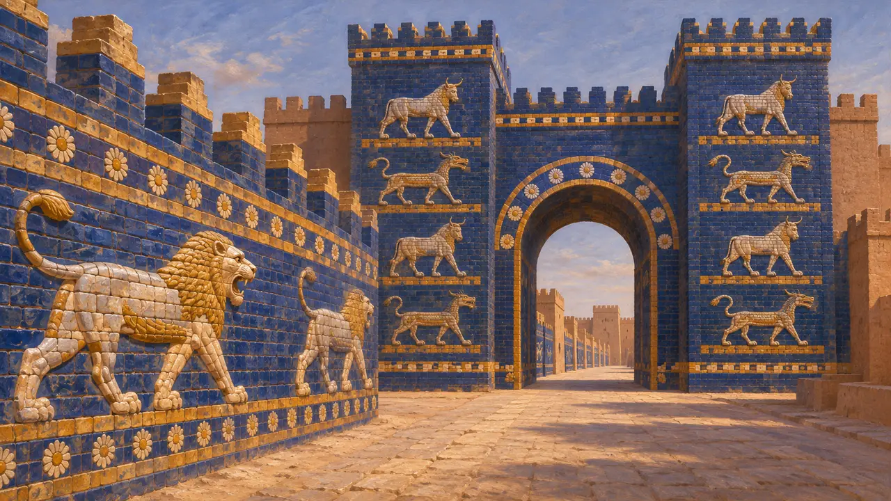
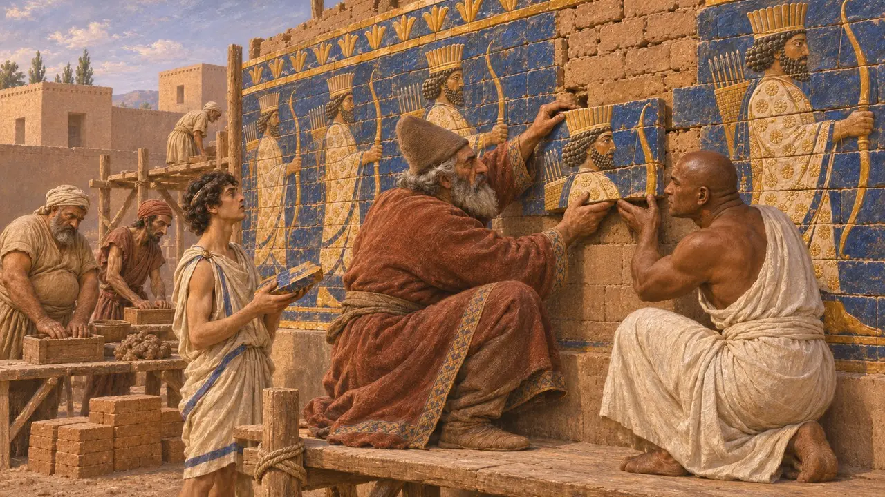
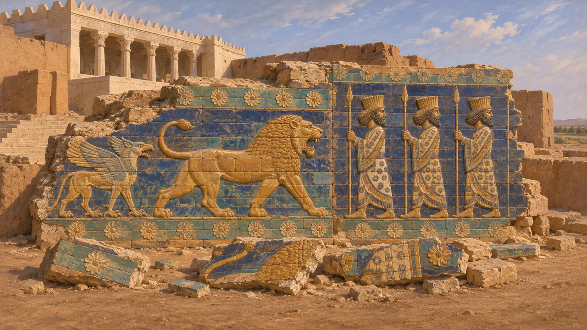
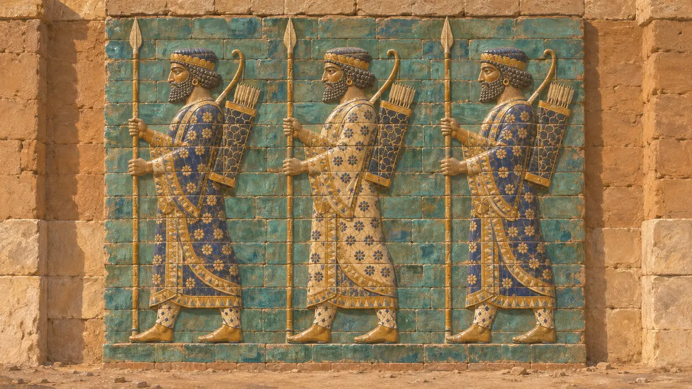

Panel de ladrillo vidriado
Frisos de ladrillo vidriado moldeado del Palacio de Darío en Susa, finales del siglo VI a. e. c.
Los paneles de ladrillo vidriado eran muros revestidos de ladrillos moldeados, cada uno con parte de una figura en relieve y cubierto de esmalte de colores. Darío y sus sucesores los emplearon para revestir los patios y portales del palacio de Susa con leones, grifos, toros alados e hileras de arqueros. El oficio procedía de Babilonia, y su uso en Susa muestra cómo el Rey reunía en su propia casa las destrezas de muchos pueblos súbditos.
En el juego: En el juego, el Panel de ladrillo vidriado es un edificio de vivienda que muestra leones en marcha como los frisos de Susa. Su atribución al oficio babilonio sigue a DSf, aunque la Carta nombra a medos y egipcios como los hombres que adornaron el muro.

Un oficio aprendido en Babilonia
En los documentosEl ladrillo vidriado moldeado era un arte mesopotámico antes de que los persas lo adoptaran. Bajo Nabucodonosor II, a comienzos del siglo VI, la Puerta de Ishtar y la Vía Procesional de Babilonia se revistieron de ladrillo vidriado azul con toros, dragones y leones en marcha. Excavadores alemanes sacaron a la luz estos muros entre 1899 y 1917, y hoy se alzan partes reconstruidas en Berlín.
R. Koldewey, Das wieder erstehende Babylon, 1913

Lo que dice la Carta de Susa
En los documentosLa carta fundacional de Darío para su palacio de Susa enumera los pueblos que aportaron materiales y mano de obra. Dice que el ladrillo cocido lo moldearon los babilonios, y que los hombres que decoraron el muro fueron medos y egipcios. Otros artesanos de la lista procedían de Jonia, Sardes y otros lugares, de modo que la carta presenta el palacio como obra de todo el imperio.
DSf

Leones, grifos y guardias
En los documentosLos excavadores franceses dirigidos por Marcel y Jane Dieulafoy hallaron los frisos en fragmentos caídos en Susa entre 1884 y 1886, y misiones francesas posteriores recuperaron más. Muchos paneles de Susa no estaban hechos de arcilla cocida, sino de una pasta silícea rica en cuarzo, un cambio respecto a la práctica babilónica. Las piezas se recompusieron en el Louvre, donde hoy se exponen el friso de los leones y el friso de los arqueros.
J. Perrot (ed.), The Palace of Darius at Susa, 2013

Quiénes son los arqueros y de qué época son
En disputaEl friso de arqueros portadores de lanza con ricas túnicas suele llamarse los Inmortales, por los 10.000 persas escogidos que describe Heródoto. Ninguna inscripción los nombra, y algunos estudiosos ven en ellos guardias reales en general. Como los ladrillos se hallaron caídos y dispersos, su ubicación original en el palacio es incierta, y algunos podrían pertenecer a la reconstrucción de Artajerjes II y no a la época de Darío.
Herodotus 7.83; P. O. Harper, J. Aruz and F. Tallon (eds), The Royal City of Susa, 1992
Fuentes
- DSf
- J. Perrot (ed.), The Palace of Darius at Susa, 2013
- P. O. Harper, J. Aruz and F. Tallon (eds), The Royal City of Susa, 1992
- P. Briant, From Cyrus to Alexander, 2002
- R. Koldewey, Das wieder erstehende Babylon, 1913
- Herodotus 7.83